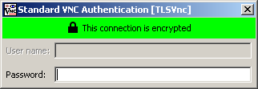
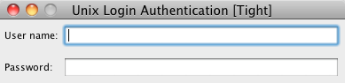
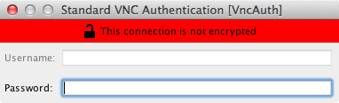
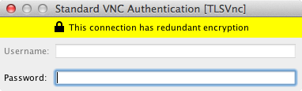

User’s Guide for TurboVNC 3.1
This document and all associated illustrations are licensed under the Creative Commons Attribution 2.5 License. Any works that contain material derived from this document must cite The VirtualGL Project as the source of the material and list the current URL for the TurboVNC web site.
The official TurboVNC binaries contain libjpeg-turbo, which is based in part on the work of the Independent JPEG Group.
TurboVNC is licensed under the GNU General Public License, v2.
This document assumes that TurboVNC will be installed in the default directory (/opt/TurboVNC on Linux/Un*x and Mac systems and c:\Program Files\TurboVNC on Windows systems.) If your installation of TurboVNC resides in a different directory, then adjust the instructions accordingly.
TurboVNC is a derivative of VNC (Virtual Network Computing) that is tuned to provide peak performance for 3D and video workloads. TurboVNC was originally a fork of TightVNC 1.3.x, and on the surface, the TurboVNC Server still behaves similarly to its parent. However, the current version of TurboVNC contains a much more modern X server code base (based on X.org) and a variety of other features and fixes, including a high-performance cross-platform VNC viewer. TurboVNC compresses 3D and video workloads significantly better than the “tightest” compression mode in TightVNC 1.3.x while using only typically 15-20% of the CPU time of the latter. Using non-default settings, TurboVNC can also match the best compression ratios produced by TightVNC 1.3.x for 2D workloads (see Section 7.2.)
All VNC implementations, including TurboVNC, use the RFB (remote framebuffer) protocol to send “framebuffer updates” from the VNC server to any connected viewers. Each framebuffer update can contain multiple “rectangles” (regions that have changed since the last update.) As with TightVNC, TurboVNC analyzes each rectangle, splits it into multiple “subrectangles”, and attempts to encode each subrectangle using the “subencoding type” that will provide the most efficient compression, given the number of unique colors in the subrectangle. The process by which TurboVNC does this is referred to as an “encoding method.” A rectangle is first analyzed to determine if any significant portion of it is solid, and if so, that portion is encoded as a bounding box and a fill color (“Solid subencoding.”) Of the remaining subrectangles, those with only two colors are encoded as a 1-bit-per-pixel bitmap with a 2-color palette (“Mono subencoding”), those with low numbers of unique colors are encoded as a color palette and an 8-bit-per-pixel bitmap (“Indexed color subencoding”), and subrectangles with high numbers of unique colors are encoded using either JPEG or arrays of RGB pixels (“Raw subencoding”), depending on the encoding method. zlib can optionally be used to compress the indexed color, mono and raw subrectangles.
Part of TurboVNC’s speedup comes from the use of libjpeg-turbo, the same high-speed SIMD-optimized JPEG codec used by VirtualGL. However, TurboVNC also eliminates the CPU-hungry smoothness detection routines that TightVNC uses to determine whether a subrectangle is a good candidate for JPEG compression, and TurboVNC’s encoding methods tend to favor the use of JPEG more, since it is now generally the fastest subencoding type. Furthermore, TurboVNC eliminates buffer copies, it maximizes network efficiency by splitting framebuffer updates into relatively large subrectangles, and it uses only the zlib compression levels that can be shown to have a measurable performance benefit.
TurboVNC is the product of extensive research, in which many different permutations of the TightVNC encoder were benchmarked at the low level against a variety of RFB session captures that simulate real-world application workloads, both 2D and 3D. For more information on the research leading to TurboVNC’s encoder design, see this report.
In addition to high performance, other notable features of TurboVNC include:
TurboVNC, when used with VirtualGL, provides a highly performant and robust solution for remotely displaying 3D applications over all types of networks.
On “modern” hardware, TurboVNC is capable of streaming 50+ Megapixels/second over a 100 Megabit/second local area network with perceptually lossless image quality. TurboVNC can stream between 10 and 12 Megapixels/second over a 5 Megabit/second broadband connection at reduced (but usable) image quality.
TurboVNC is compatible with other VNC distributions. See Chapter 10 for more information. The official TurboVNC binaries can be installed onto the same system as other VNC distributions without interference.
| Host | Client (Linux) | Client (non-Linux) | ||
|---|---|---|---|---|
| CPU |
|
x86-64 or AArch64 required | ||
| O/S | TurboVNC should work with a variety of Linux distributions, FreeBSD, and Solaris 11, but currently-supported versions of Red Hat Enterprise Linux and its derivatives, Ubuntu LTS, and SuSE Linux Enterprise tend to receive the most attention from the TurboVNC community. | |||
| Other | SSH server (if using the TurboVNC Session Manager) | For optimal performance, the X server should be configured to export True Color (24-bit or 32-bit) visuals. |
|
|
| Client | |
|---|---|
| CPU | 64-bit Intel or Apple silicon required |
| O/S | macOS 10.12 “Sierra” or later (Intel); macOS 11 “Big Sur” or later (Apple silicon) |
| Client | |
|---|---|
| CPU | For optimal performance, the CPU should support SSE2 extensions. |
| O/S | Windows 7 or later |
| Other | For optimal performance, the client display should have a 24-bit or 32-bit (True Color) color depth. |
yum install turbovnc*.rpm
dnf install turbovnc*.rpm
yast2 --install turbovnc*.rpm
rpm -U turbovnc*.rpm
dpkg -i turbovnc*.deb apt install -f
Download the appropriate binary package, as above, then execute the following commands:
mkdir ~/turbovnc
cd ~/turbovnc
rpm2cpio full/path/of/turbovnc*.rpm | cpio -idv
dpkg-deb –extract full/path/of/turbovnc*.deb ~/turbovnc
Add ~/turbovnc to any paths specified in this document.
If using the TurboVNC Session Manager, set the turbovnc.serverdir Java system property in the TurboVNC Viewer to ~/turbovnc/opt/TurboVNC, or set the TVNC_SERVERDIR environment variable on the client machine to \~/turbovnc/opt/TurboVNC (note backslash.) Refer to Section 11.2.
The TurboVNC security configuration file will not work when TurboVNC is installed in this manner.
If you are using a Linux/Un*x platform for which there is not a
pre-built TurboVNC binary package available, then download the TurboVNC
source tarball
(turbovnc-3.0.92.tar.gz) from the
Files
area of the
TurboVNC
SourceForge project page, uncompress
it, cd turbovnc-3.0.92, and read
BUILDING.md for further instructions
on how to build TurboVNC from source.
As root, issue one of the following commands:
rpm -e turbovnc
dpkg -r turbovnc
Open the Uninstall TurboVNC application, located in the TurboVNC Applications folder. You can also open a terminal and execute:
sudo /opt/TurboVNC/bin/uninstall
Use the Programs and Features applet in the Control Panel (or the Apps & Features applet if you are running Windows 10), or select Uninstall TurboVNC in the TurboVNC Start Menu group.
The TurboVNC Viewer, like any VNC viewer, can be used to connect to any VNC server. However, the TurboVNC Viewer also includes the TurboVNC Session Manager, which can be used with the TurboVNC Server to remotely start or kill a TurboVNC session, list all TurboVNC sessions running under a particular user account on a particular host, and choose a TurboVNC session to which to connect. The TurboVNC Session Manager uses the TurboVNC Viewer’s built-in SSH client, which supports OpenSSH config files and password-less public key authentication (using ssh-agent or Pageant.)
/opt/TurboVNC/bin/vncviewer
/opt/TurboVNC/bin/vncviewer
c:\Program Files\TurboVNC\vncviewer.bat
You can specify the SSH username, if it differs from your local username, by prefixing the hostname/IP address with user@, where user is the SSH username.
The TurboVNC Session Manager automatically uses SSH tunneling and OTP authentication by default, but you can pass -nosessmgrauto on the TurboVNC Viewer command line to disable this behavior, thus allowing any authentication/encryption method to be used. Additional command-line parameters can be used to specify the port on which the SSH server is listening and the location of the SSH private key file. The OpenSSH config file (~/.ssh/config by default) can also be used to specify those parameters persistently for a given host.
The TVNC_SERVERDIR and TVNC_SERVERARGS environment variables, and their equivalent Java system properties (turbovnc.serverdir and turbovnc.serverargs) can be used to specify a non-default installation path for the TurboVNC Server or additional arguments to pass to the TurboVNC Server when starting new sessions (refer to Section 11.2.) These arguments can also be specified on the server using the system-wide or per-user turbovncserver.conf file.
ssh user@hostReplace
user with your username on the TurboVNC
host and host with the hostname or IP address of
the host.
/opt/TurboVNC/bin/vncserver
Desktop 'TurboVNC: my_host:1 (my_user)' started on display my_host:1
/opt/TurboVNC/bin/vncviewer
/opt/TurboVNC/bin/vncviewer
c:\Program Files\TurboVNC\vncviewer.bat
| Standard VNC Authentication Dialog |  |
| Unix Login Authentication Dialog |  |
If you are connecting to a non-VeNCrypt-compatible VNC server, then the authentication dialog will warn you that the connection is not encrypted:

You should never use Unix Login authentication with an unencrypted connection. Instead, tunnel the connection through SSH (see Section 6.6 below for more details.)
Closing the TurboVNC Viewer disconnects from the TurboVNC session, but the TurboVNC session will remain running on the TurboVNC host (as will any applications that you may have started within the session), and you can reconnect to the session at any time.
If the TurboVNC session was created with default settings, then the easiest way to kill it is to log out of the window manager running in the session. You can also use the TurboVNC Session Manager to remotely kill TurboVNC sessions, or you can type the following command:
/opt/TurboVNC/bin/vncserver -kill :n
from a terminal in the TurboVNC session or from an SSH session on the
host. Replace n with the X display number of the
TurboVNC session you want to kill.
To list the X display numbers and process ID’s of all TurboVNC sessions currently running under your user account on a particular host, type the following command:
/opt/TurboVNC/bin/vncserver -list
from a terminal in the TurboVNC session or from an SSH session on the host.
When a TurboVNC session is started, the vncserver script
can optionally start a simple web server that serves up
noVNC,
an HTML 5/JavaScript VNC viewer that works in any web browser (with
reduced performance and features relative to the TurboVNC Viewer.) This
allows you to easily connect to a TurboVNC session from a machine that
does not have the TurboVNC Viewer installed (including mobile devices.)
To launch noVNC along with a TurboVNC session, pass -novnc
dir to /opt/TurboVNC/bin/vncserver when
starting the session, where dir is the directory
containing noVNC (setting the $noVNC variable in
turbovncserver.conf has the same
effect.) The vncserver script will print the noVNC URL,
which will be of the form:
http://host:5800+n/vnc.html?host=host&port=5900+n
or
https://host:5800+n/vnc.html?host=host&port=5900+n&encrypt=1
where host is the hostname or IP address of the
TurboVNC host, and n is the X display number of
the TurboVNC session.
Point your web browser to that URL in order to access the TurboVNC
session. You can optionally pass -x509cert
certificate-file -x509key private-key-file to
vncserver to encrypt both the HTTP and RFB connections.
See the vncserver man page for more details.
NOTE: noVNC only supports VNC Password authentication, so it is strongly recommended that it be used only with one-time passwords unless the connections are encrypted.
If the TurboVNC Session
Manager is not being used, then the connection
between the TurboVNC Server and the TurboVNC Viewer will, by default,
use Anonymous TLS encryption (refer to Chapter
8.) However, it may be
preferable to secure the TurboVNC connection using SSH rather than
Anonymous TLS encryption, particularly if one does not want to open
additional ports in the host’s firewall. This can easily be
accomplished by using the -via and -tunnel
command-line options in the TurboVNC Viewer (or the equivalent GUI
options, which are located under the “Security” tab in the
Options dialog.)
The -via and -tunnel options in the TurboVNC
Viewer take advantage of the port forwarding feature in SSH. For
instance, running
vncviewer -via user@host localhost:n
or
vncviewer -tunnel user@host:n
is the equivalent of running
ssh -L fp:localhost:5900+n user@host vncviewer localhost::fp
where fp is a free TCP port on the client machine
(this is automatically determined by the TurboVNC Viewer.)
In the above examples, vncviewer is the command used to launch the TurboVNC Viewer– /opt/TurboVNC/bin/vncviewer on Mac/Linux/Un*x systems or c:\Program Files\TurboVNC\vncviewer.bat on Windows systems.
-tunnel can be used as a shortcut whenever the SSH and VNC
hosts are the same machine. -via is more flexible, since
it allows you to specify the VNC server to which to connect. The VNC
server is specified from the point of view of the SSH server, which is
why we used localhost in the above example.
The command used to establish the SSH tunnel is configurable by way of environment variables. See Section 11.2 for more details.
Passing an argument of -localhost to vncserver
will force the TurboVNC session to accept inbound connections only from
the TurboVNC host. This effectively forces SSH tunneling to be used for
remote connections. If the no-remote-connections directive
is set in the TurboVNC security configuration file, then that has the
effect of enabling the -localhost option for all new
TurboVNC sessions that are started on the host.
Passing an argument of -noreverse to vncserver
will disable the ability to make outbound (reverse) connections from the
TurboVNC session. If the no-reverse-connections directive
is set in the TurboVNC security configuration file, then that has the
effect of enabling the -noreverse option for all new
TurboVNC sessions that are started on the host.
If the host is configured such that it only allows SSH connections, then
disallowing the TLS* security types on a system-wide basis (by setting
the permitted-security-types directive in the TurboVNC
security configuration file) is recommended. Otherwise, when using the
TurboVNC Viewer with default settings, the connection will have
redundant encryption.

The TurboVNC Server includes a software GLX/OpenGL implementation that can be used for casual 3D rendering. This implementation uses the swrast DRI driver provided by Mesa 8.x and later, and it supports only direct rendering. Thus, it can only be used on systems that do not have vendor-specific GPU drivers installed or on systems that provide a libglvnd-enabled build of Mesa. In general, if the TurboVNC host has a GPU, then you should use VirtualGL rather than relying on TurboVNC’s software OpenGL implementation.
Passing -extension GLX to vncserver
disables the built-in GLX/OpenGL implementation, thus restoring the
behavior of TurboVNC 2.1.x and earlier (which required VirtualGL in
order to run OpenGL applications.) If the built-in GLX/OpenGL
implementation is not functioning properly, then pass
-verbose to vncserver to log informational
messages that may reveal the source of the problem.
This version of the TurboVNC Server can run 3D (compositing) window
managers (such as Unity or GNOME 3+ or KDE 5+) using its built-in
software OpenGL implementation, and it also provides an option
(-vgl) that allows for running 3D window managers using
VirtualGL. However, for performance reasons, it is generally
recommended that you use a 2D window manager with the TurboVNC Server
(even with VirtualGL, 3D window managers have a lot of overhead.) As of
this writing, Ubuntu, RHEL 7+, and Fedora provide an optional 2D window
manager called “GNOME Fallback”, “GNOME
Flashback”, or “GNOME Classic”, which will
automatically be used if it is installed and the TVNC_WM
environment variable is set to 2d. For other systems that
lack a 2D window manager, it is recommended that you install MATE or
Xfce. Refer to
this
report for an up-to-date list of window
managers that have been tested with this version of the TurboVNC Server,
how to configure the TurboVNC Server to use those window managers, and a
list of known compatibility issues.
For more detailed instructions on the usage of TurboVNC:
man -M /opt/TurboVNC/man vncserver man -M /opt/TurboVNC/man Xvnc man -M /opt/TurboVNC/man vncconnect man -M /opt/TurboVNC/man vncpasswd
/opt/TurboVNC/bin/vncviewer -?on Un*x or
c:\Program Files\TurboVNC\vncviewer.bat -?on Windows to display a full list of supported command-line options/parameters and their descriptions.
The level of image compression in TurboVNC can be adjusted to balance the (sometimes conflicting) goals of high image quality and high performance. There are four options that control the manner in which TurboVNC compresses images:
These parameters can be adjusted by accessing the TurboVNC Viewer Options dialog box (click on the “Options” button in the “TurboVNC Connection” dialog box or, after connecting to the server, click on the Connection Options button in the toolbar.)
The TurboVNC Viewer provides five preset “encoding methods”, corresponding to the most useful combinations of the image compression options described above:
| Encoding method | Allow JPEG | JPEG image quality | JPEG chrominance subsampling | Compression level | Notes |
|---|---|---|---|---|---|
| “Tight + Perceptually Lossless JPEG” | Yes | 95 | 1x | 1 | This encoding method should be perceptually lossless (that is, any image compression artifacts it produces should be imperceptible to human vision) under most viewing conditions. This encoding method requires a great deal of network bandwidth, however, and is generally not recommended except on 50 Megabit/second and faster networks. |
| “Tight + Medium-Quality JPEG” | Yes | 80 | 2x | 6 | For subrectangles that have a high number of unique colors, this encoding method produces some minor, but generally not very noticeable, image compression artifacts. All else being equal, this encoding method typically uses about twice the network bandwidth of the “Tight + Low-Quality JPEG” encoding method and about half the bandwidth of the “Tight + Perceptually Lossless JPEG” encoding method, making it appropriate for medium-speed networks such as 10 Megabit Ethernet. Interframe comparison is enabled with this encoding method (Compression Level 6 = Compression Level 1 + interframe comparison.) |
| “Tight + Low-Quality JPEG” | Yes | 30 | 4x | 7 | For subrectangles that have a high number of unique colors, this encoding method produces very noticeable image compression artifacts. However, it performs optimally on low-bandwidth connections. If image quality is more critical than performance, then use one of the other encoding methods or take advantage of the Lossless Refresh feature. In addition to reducing the JPEG quality to a “minimum usable” level, this encoding method also enables interframe comparison and Compression Level 2 (CL 7 = CL 2 + interframe comparison.) Compression Level 2 can reduce bandwidth for low-color application workloads that are not good candidates for JPEG compression. |
| “Lossless Tight” | No | N/A | N/A | 0 | This encoding method uses indexed color subencoding for subrectangles that have a low number of unique colors, but it otherwise does not perform any image compression at all. Lossless Tight is thus suitable only for gigabit and faster networks. This encoding method uses significantly less CPU time than any of the JPEG-based encoding methods. Lossless Tight requires an RFB protocol extension that is, as of this writing, only supported by the TurboVNC Viewer. |
| “Lossless Tight + Zlib” | No | N/A | N/A | 6 | This encoding method uses indexed color subencoding for subrectangles that have a low number of unique colors and raw subencoding for subrectangles that have a high number of unique colors. It compresses all subrectangles using zlib with zlib compression level 1. For certain types of low-color workloads (CAD applications, in particular), this encoding method may use less network bandwidth than the “Tight + Perceptually Lossless JPEG” encoding method, but it also uses significantly more CPU time than any of the JPEG-based encoding methods. Interframe comparison is enabled with this encoding method (Compression Level 6 = Compression Level 1 + interframe comparison.) |
The encoding method can be set in the TurboVNC Viewer Options dialog box (click on the “Options” button in the “TurboVNC Connection” dialog box or, after connecting to the server, click on the Connection Options button in the toolbar.)
Certain ill-behaved applications can sometimes draw the same thing over and over again, and this can cause redundant framebuffer updates to be sent to the VNC viewer. Additionally, modern GUI toolkits often use image-based drawing methods (the X Rendering Extension, for instance), which can result in an entire window being redrawn, even if only a few pixels in the window have changed. The TurboVNC Server can guard against this by maintaining a copy of the remote framebuffer for each connected viewer, comparing each new framebuffer update rectangle against the pixels in the framebuffer copy, and discarding any redundant portions of the rectangle before they are sent to the viewer.
Interframe comparison has some tradeoffs associated with it. Perhaps the most important of these is that it increases the memory usage of the TurboVNC Server by a factor of N, where N is the number of connected viewers. This can prove to be quite significant if the remote desktop size is relatively large.
2D applications are most often the ones that generate duplicate framebuffer updates, so using interframe comparison with such applications can significantly reduce the network usage and the host CPU usage (since fewer rectangles are actually being encoded.) However, with 3D applications, the benefits of interframe comparison are less clear, since it is less common for those applications to generate duplicate framebuffer updates. Interframe comparison may benefit certain classes of 3D applications, such as design applications that render a model against a static background– particularly when the model is not zoomed in enough to fill the entire window. In real-world tests, however, interframe comparison rarely reduces the network usage for 3D applications by more than 5-10%. Furthermore, with games and other immersive applications that modify most of the pixels on the screen each time a frame is rendered, interframe comparison can actually increase both CPU usage and network usage. Furthermore, the effects of duplicate framebuffer updates are not typically noticeable on high-speed networks, but an increase in host CPU usage might be.
For these reasons, interframe comparison is not enabled by default and
should not generally be enabled except on bandwidth-constrained networks
and with applications for which it can be shown to be beneficial.
Interframe comparison can be enabled by either passing an argument of
-interframe to vncserver when starting a
TurboVNC session or by requesting a compression level of 5 or higher
from the viewer (see below.)
One of the underlying principles of TurboVNC’s design is to expose only the options that have proven to be useful (that is, the options that have proven to have good performance tradeoffs.) Thus, the TurboVNC Viewer GUI will normally only allow you to select Compression Levels 1-2 if JPEG subencoding is enabled (6-7 if interframe comparison is also enabled) or Compression Levels 0-1 if JPEG subencoding is disabled (5-6 if interframe comparison is enabled.) Other compression levels can, however, be specified on the command line, and doing so will enable a compatibility mode in the TurboVNC Viewer GUI that allows any compression level from 0 to 9 to be requested.
When connecting to a TurboVNC server, requesting a particular compression level has the following effect:
| Compression level | Zlib compression level (non-JPEG subrectangles) | Palette threshold | Interframe comparison | Notes |
|---|---|---|---|---|
| 0 | 1 | 24 | No | Same as Compression Level 1. Bypassing zlib when JPEG is enabled would only reduce the CPU usage for non-JPEG subrectangles, which is of limited usefulness. Further, bypassing zlib requires an RFB protocol extension that is not supported by non-TurboVNC viewers. It is presumed that, if one wants to reduce the CPU usage, then one wants to do so for all subrectangles, so CL 0 without JPEG (AKA “Lossless Tight”) should be used. |
| 1 | 1 | 24 | No | See the description of the “Tight + JPEG” encoding methods above. |
| 2 | 3 | 96 | No | A higher palette threshold causes indexed color subencoding to be used more often than with CL 1, and indexed color subrectangles are compressed using a higher zlib compression level. This can provide typically 20-40% better compression than CL 1 (with a commensurate increase in CPU usage) for workloads that have a low number of unique colors. However, Compression Level 2 can increase the CPU usage for some high-color workloads without providing significantly better compression. |
| 3-4 | 3 | 96 | No | Same as Compression Level 2 (reserved for future expansion) |
| 5-6 | 1 | 24 | Yes | Same as Compression Level 1, but with interframe comparison enabled |
| 7-8 | 3 | 96 | Yes | Same as Compression Level 2, but with interframe comparison enabled |
| 9 | 7 | 256 | Yes | This mode is included only for backward compatibility with TightVNC. It provides approximately the same level of compression for 2D applications as Compression Level 9 in TightVNC 1.3.x, while using much less CPU time. It also provides much better compression than TightVNC for 3D and video applications. However, relative to Compression Level 2, this mode uses approximately twice as much CPU time and only achieves about 10-20% better average compression for 2D apps (and has no noticeable benefit for 3D and video apps.) Thus, its usefulness is generally very limited. |
| Compression Level | Zlib compression level (indexed color subrectangles) | Zlib compression level (raw subrectangles) | Palette threshold | Interframe comparison | Notes |
|---|---|---|---|---|---|
| 0 | None | None | Subrectangle size / 4 | No | See the description of the “Lossless Tight” encoding method above. |
| 1 | 1 | 1 | Subrectangle size / 96 | No | See the description of the “Lossless Tight + Zlib” encoding method above. |
| 2-4 | 1 | 1 | Subrectangle size / 96 | No | Same as Compression Level 1 (reserved for future expansion) |
| 5 | None | None | Subrectangle size / 4 | Yes | Same as Compression Level 0, but with interframe comparison enabled |
| 6-8 | 1 | 1 | Subrectangle size / 96 | Yes | Same as Compression Level 1, but with interframe comparison enabled |
| 9 | 7 | 5 | Subrectangle size / 96 | Yes | This mode is included only for backward compatibility with TightVNC. It provides approximately the same level of compression for 2D applications as Compression Level 9 in TightVNC 1.3.x, while using much less CPU time. It also provides much better compression than TightVNC for 3D and video applications. However, relative to Compression Level 1, this mode uses approximately twice as much CPU time and only achieves about 10% better average compression for 2D apps (and has no noticeable benefit for 3D and video apps.) Thus, its usefulness is generally very limited. |
Since both of TurboVNC’s mathematically lossless encoding methods have performance drawbacks, another option for image-quality-critical applications is the “Lossless Refresh” feature. When a lossless refresh is requested by a TurboVNC viewer, the server will send a mathematically lossless image of the current TurboVNC desktop to the requesting viewer. So, for instance, a user can rotate/pan/zoom an object in their 3D application using a very low-quality JPEG setting, then when that user is ready to interpret or analyze the object, they can request a lossless refresh of TurboVNC’s virtual screen.
To perform a lossless refresh, press CTRL-ALT-SHIFT-L or click on the Lossless Refresh toolbar icon.
Passing an argument of -alr timeout to
vncserver will enable the automatic lossless refresh (ALR)
feature for the TurboVNC session. ALR will monitor all of the VNC
viewer connections, and if more than timeout
seconds have elapsed since the last framebuffer update was sent to a
given viewer, then the TurboVNC Server will send to that viewer a
mathematically lossless copy of any “ALR-eligible” screen
regions that have been affected by lossy compression. You can also pass
arguments of -alrqual and -alrsamp to
vncserver to specify that automatic lossless refreshes
should be sent using JPEG instead (see the Xvnc man page
for details.)
The ALR feature is designed mainly for use with interactive visualization applications. The idea is that, on a low-bandwidth connection, low-quality JPEG can be used while the 3D scene is rotated/panned/zoomed, but when the motion stops, a fully lossless copy of the 3D image is sent and can be studied in detail.
The default is for any regions drawn with X[Shm]PutImage()
to be ALR-eligible, as well as any regions drawn with CopyRect, if the
source of the CopyRect operation was affected by lossy compression
(CopyRect is an RFB encoding that allows the server to request that the
viewer move a rectangle of pixels from one location to another.) When
used with VirtualGL, this means that ALRs will mainly be sent for just
the 3D screen regions. This should be fine for most 3D applications,
since the 3D regions are the ones that are quality-critical. The
default ALR behavior also prevents what might best be called the
“blinking cursor dilemma.” Certain programs have a blinking
cursor that may update more frequently than the ALR timeout. Since an
ALR is triggered based on a period of inactivity relative to the last
framebuffer update, these continuous updates prevent an ALR from ever
being sent. Fortunately, blinking cursors are not typically drawn using
X[Shm]PutImage(), so the problem is effectively worked
around by limiting the ALR-eligible regions to just the subset of
regions that were drawn with X[Shm]PutImage() and CopyRect.
NOTE: Ill-behaved applications that continuously render the same image will cause a variation of the “blinking cursor dilemma” and thus defeat ALR unless interframe comparison is enabled.
You can override the default ALR behavior, thus making all screen
regions eligible for ALR, by setting the TVNC_ALRALL
environment variable to 1 on the TurboVNC host prior to
starting a TurboVNC session. You can also set
TVNC_ALRCOPYRECT to 0 to make CopyRect regions
ALR-ineligible, which approximates the behavior of TurboVNC 1.2.1 and
prior.
By default, the TurboVNC Server uses multiple threads to perform image encoding and compression, thus allowing it to take advantage of multi-core or multi-processor systems. The server splits the screen vertically into N tiles, where N is the number of threads, and assigns each tile to a separate thread. The scalability of this algorithm is nearly linear when used with demanding 3D or video applications that fill most of the screen. However, whether or not multithreading improves the overall performance of TurboVNC depends largely on the performance of the viewer and the network. If either the viewer or the network is the primary performance bottleneck, then enabling multithreading in the server will not help. Multithreading is also not currently implemented with non-Tight encoding types.
To disable server-side multithreading, set the TVNC_MT
environment variable to 0 on the host prior to starting
vncserver, or pass an argument of -nomt to
vncserver. The default behavior is to use as many threads
as there are cores on the TurboVNC host (up to a maximum of 4), but you
can set the TVNC_NTHREADS environment variable or pass an
argument of -nthreads to vncserver to override
this.
In an attempt to maintain consistency with other VNC implementations, TurboVNC uses the following terminology when referring to its security extensions:
vncpasswd program, a unique password is
generated “on the fly” for the TurboVNC session, and the
password is printed on the command line (see the man page for
vncpasswd for more details.) The user enters this
password in the VNC viewer, and the VNC viewer sends the password to
the server as if it were a VNC password. However, once the OTP has
been used to authenticate a viewer, the OTP is forgotten and cannot be
reused. OTP authentication can be used, for instance, to launch or
connect to TurboVNC sessions from an automated web portal or from a job
scheduler. OTP authentication is also useful for allowing temporary
access to a TurboVNC session for collaboration purposes. The
TurboVNC Session
Manager uses OTP authentication by default,
which allows it to securely authenticate with a TurboVNC session
without prompting for additional credentials.
TurboVNC supports three encryption methods:
TurboVNC supports the following security types:
| Server Security Type | Authentication Method | Encryption Method | Viewer Security Type | Authentication Scheme | Compatibility |
|---|---|---|---|---|---|
| None | None | None | None | None | RFB 3.3+ |
| VNC | VNC Password | None | VNC | Standard VNC | RFB 3.3+ |
| OTP | One-Time Password | None | VNC | Standard VNC | RFB 3.3+ |
| Plain | PAM User/Password | None | Plain | Plain | RFB 3.7+ with VeNCrypt extensions |
| TLSNone | None | Anonymous TLS | TLSNone | None | RFB 3.7+ with VeNCrypt extensions |
| TLSVnc | VNC Password | Anonymous TLS | TLSVnc | Standard VNC | RFB 3.7+ with VeNCrypt extensions |
| TLSOtp | One-Time Password | Anonymous TLS | TLSVnc | Standard VNC | RFB 3.7+ with VeNCrypt extensions |
| TLSPlain | PAM User/Password | Anonymous TLS | TLSPlain | Plain | RFB 3.7+ with VeNCrypt extensions |
| X509None | None | TLS/X.509 | X509None | None | RFB 3.7+ with VeNCrypt extensions |
| X509Vnc | VNC Password | TLS/X.509 | X509Vnc | Standard VNC | RFB 3.7+ with VeNCrypt extensions |
| X509Otp | One-Time Password | TLS/X.509 | X509Vnc | Standard VNC | RFB 3.7+ with VeNCrypt extensions |
| X509Plain | PAM User/Password | TLS/X.509 | X509Plain | Plain | RFB 3.7+ with VeNCrypt extensions |
| UnixLogin | PAM User/Password | None | UnixLogin | Unix Login | RFB 3.7+ with TightVNC extensions |
NOTE: The security type names are case-insensitive. The capitalization conventions above are used in order to maintain consistency with the RFB protocol specification.
The default behavior of the TurboVNC Server is for all security types
except “TLSNone”, “X509None”, and
“None” to be enabled and for VNC Password and OTP
authentication to be preferred over PAM User/Password authentication.
However, the system administrator can disable one or more of the
security types or set the preferred order of the security types by
editing the TurboVNC security configuration file. See the
Xvnc man page for more details.
If the VNC server allows multiple security types, then the VNC
viewer’s default security type will be determined by the
server’s preferred security type. In this case, the user can
override the default by passing command-line arguments to
vncviewer. If the VNC server prefers a security type that
supports Standard VNC authentication, then the user can force the use of
Unix Login/Plain authentication by passing an argument of -user
user-name to vncviewer when connecting to
the TurboVNC session. Similarly, if the VNC server prefers a security
type that supports Unix Login/Plain authentication, then the user can
force the use of Standard VNC authentication by passing an argument of
-nounixlogin to vncviewer. You can also
accomplish the same thing by unchecking “Unix Login” or
“Plain” or “Standard VNC” in the
“Security” tab of the Options dialog or by limiting the
available security types using the SecurityTypes,
User, or NoUnixLogin arguments/parameters.
If the system administrator has not restricted any of the server
security types on a system-wide basis, then the user can choose to
disable some or all of them for a particular TurboVNC session by using
the -SecurityTypes command-line argument when starting the
session. See the Xvnc man page for more details.
For more detailed information about the TurboVNC security extensions, refer to the TurboVNC man pages:
man -M /opt/TurboVNC/man vncserver man -M /opt/TurboVNC/man Xvnc man -M /opt/TurboVNC/man vncpasswd
Referring to the VirtualGL User’s Guide, VirtualGL’s X11 Transport draws OpenGL-rendered frames onto an X display using standard X11 drawing commands. Since this results in the frames being sent uncompressed to the X server, the X11 Transport is designed to be used with an “X proxy.” An X proxy acts as a virtual X server, receiving X11 commands from applications (and from VirtualGL), rendering the X11 commands into images, compressing the resulting images, and sending the compressed images over the network to a client or clients.
Since VirtualGL is sending rendered frames to the X proxy at a very fast rate, the proxy must be able to compress the frames very quickly in order to keep up. Unfortunately, however, most X proxies can’t. They simply aren’t designed to compress, with any degree of performance, the large and complex images generated by 3D applications.
Enter TurboVNC. Although TurboVNC can be used with all types of applications, it was initially designed as a fast X proxy for VirtualGL. TurboVNC provides an alternate means of delivering rendered frames from VirtualGL to a client machine without using VirtualGL’s built-in VGL Transport.
The most common (and optimal) way to use VirtualGL with TurboVNC is to configure the same machine as a TurboVNC host and a VirtualGL server. This allows VirtualGL to send rendered frames to TurboVNC through shared memory rather than over a network.

The following procedure describes how to launch a 3D application using this configuration.
/opt/VirtualGL/bin/vglrun [vglrun options] 3D-application-executable-or-script [arguments]
If the TurboVNC host and VirtualGL server are different machines, then it is desirable to use the VGL Transport to send rendered frames from the VirtualGL server to the TurboVNC session. It is also desirable to disable image compression in the VGL Transport. Otherwise, the images would have to be compressed by the VirtualGL server, decompressed by the VirtualGL Client, then recompressed by the TurboVNC Server, which is a waste of CPU resources. However, sending images uncompressed over a network requires a fast network (generally, Gigabit Ethernet or faster), so there needs to be a fast link between the VirtualGL server and the TurboVNC host for this procedure to perform well.
/opt/VirtualGL/bin/vglconnect user@serverReplace
user with your username on the VirtualGL
server and server with the hostname or IP address
of that server. Refer to the VirtualGL User’s Guide for
additional vglconnect options.
VGL_COMPRESS environment
variable to rgb
Passing an argument of -c rgb to vglrun achieves the same result.
/opt/VirtualGL/bin/vglrun [vglrun options] 3D-application-executable-or-script [arguments]
This version of TurboVNC includes partial emulation of the
NV-CONTROL X11 extension provided by nVidia’s
proprietary Un*x drivers. Certain 3D applications rely on this
extension to query and set low-level GPU properties, and unfortunately
the library (libXNVCtrl) used by applications to interact with the
extension is static, making it impossible to interpose using VirtualGL.
Passing an argument of -nvcontrol display to
vncserver will set up a fake NV-CONTROL
extension in the TurboVNC session and will redirect all
NV-CONTROL requests to display.
display should generally be the name of the 3D X
server you plan to use with VirtualGL (:0, for instance.)
The TurboVNC Server does not attempt to open a connection to this
display until an application uses the NV-CONTROL extension.
If a connection to the 3D X server cannot be opened, if the 3D X server
does not have the NV-CONTROL extension, or if other issues
are encountered when attempting to redirect NV-CONTROL
requests, then a BadRequest X11 error will be returned to the
application, and the TurboVNC session log will display an error message
explaining why the request failed. It is assumed that you have already
followed the procedure in the VirtualGL User’s Guide to allow
access to the 3D X server. If access to the 3D X server is restricted
to members of the vglusers group, then you may need to
execute
xauth merge /etc/opt/VirtualGL/vgl_xauth_key
if you need to use the NV-CONTROL extension prior to
invoking vglrun for the first time.
You can change the 3D X server for a particular TurboVNC session after
the session has been started. For instance, if you want to redirect
both NV-CONTROL requests and OpenGL to a GPU attached to
Screen 1 of Display :0, you would execute
xprop -root -f VNC_NVCDISPLAY 8s -set VNC_NVCDISPLAY :0.1 vglrun -d :0.1 3D-application-executable-or-script
In order to realize the full benefits of TurboVNC, it is necessary to use the TurboVNC Server and the TurboVNC Viewer in concert. However, TurboVNC is fully compatible with TigerVNC, TightVNC, RealVNC, and other VNC flavors. You can use the TurboVNC Viewer to connect to a non-TurboVNC server (or vice versa), although this will generally result in some decrease in performance, and features such as the TurboVNC Session Manager will not be available.
The following sections list additional things to bear in mind when mixing TurboVNC with other VNC flavors.
| JPEG quality level | 0 | 1 | 2 | 3 | 4 | 5 | 6 | 7 | 8 | 9 |
|---|---|---|---|---|---|---|---|---|---|---|
| Actual JPEG quality | 5 | 10 | 15 | 25 | 37 | 50 | 60 | 70 | 75 | 80 |
| Actual chrominance subsampling | 2X | 2X | 2X | 2X | 2X | 2X | 2X | 2X | 2X | 2X |
| JPEG quality level | 0 | 1 | 2 | 3 | 4 | 5 | 6 | 7 | 8 | 9 |
|---|---|---|---|---|---|---|---|---|---|---|
| Actual JPEG quality | 15 | 29 | 41 | 42 | 62 | 77 | 79 | 86 | 92 | 100 |
| Actual chrominance subsampling | 4X | 4X | 4X | 2X | 2X | 2X | 1X | 1X | 1X | 1X |
| Average compression ratio * | 100 | 80 | 70 | 60 | 50 | 40 | 30 | 25 | 20 | 10 |
* Experimentally determined by compressing every 10th frame in the SPECviewperf 9 benchmark suite
-compatiblegui to
the viewer to expose all 10 compression levels in the GUI, which is
useful when connecting to non-TurboVNC servers. It should be noted,
however, that our experiments have shown that compression levels higher
than 5 are generally not useful in the TightVNC or TigerVNC Servers.
They increase CPU usage exponentially without providing any significant
savings in bandwidth relative to Compression Level 5. The TurboVNC Viewer supports the Hextile, Raw, and ZRLE encoding types, which are compatible with RealVNC. None of these encoding types can be selected from the TurboVNC Viewer GUI, but Hextile or ZRLE will be selected automatically when connecting to a RealVNC server. Non-Tight encoding types, such as Hextile and Raw, can also be manually selected from the TurboVNC Viewer command line. In addition to Hextile, Raw, and ZRLE, the TurboVNC Server also supports the RRE, CoRRE, and Zlib legacy encoding types, for compatibility with older VNC viewers.
All of the non-Tight encoding types have performance drawbacks. Raw
encoding requires gigabit in order to achieve decent performance, and it
can easily take up an entire gigabit connection’s worth of
bandwidth (it also doesn’t perform particularly well with the
TurboVNC Viewer, because of the need to convert the pixels from bytes to
ints in Java.) Hextile uses very small tiles, which causes it to incur
a large amount of computational overhead. It compresses too poorly to
perform well on slow links but uses too much CPU time to perform well on
fast links. ZRLE improves upon this, but it is still too
computationally intense for fast networks. The vncviewer
man page in the TurboVNC Linux packages has some additional information
about how Hextile and ZRLE work.
| Environment Variable | TVNC_ALRALL = 0 | 1 |
| Summary | Disable/Enable automatic lossless refresh for regions that were drawn using X11 functions other than X[Shm]PutImage() |
| Default Value | Disabled |
| Environment Variable | TVNC_ALRCOPYRECT = 0 | 1 |
| Summary | Disable/Enable automatic lossless refresh for regions that were drawn using CopyRect |
| Default Value | Enabled |
| Environment Variable | TVNC_COMBINERECT = {c} |
| Summary | Combine framebuffer updates with more than {c} rectangles into a single rectangle spanning the bounding box of all of the constituent rectangles |
| Default Value | 100 |
{c} rectangles, TurboVNC will
coalesce it into a single rectangle that covers all of the rectangles in
the update. For applications that generate many tiny rectangles,
increasing TVNC_COMBINERECT may significantly increase the
number of pixels sent to the viewer, which will increase network usage.
However, for those same applications, lowering
TVNC_COMBINERECT will increase the number of rectangles
sent to the viewer, which will increase the CPU usage of both the server
and the viewer.
| Environment Variable | TVNC_ICEBLOCKSIZE = {s} |
| Summary | Set the block size for the interframe comparison engine (ICE) to {s} x {s} pixels. Setting {s} to 0 causes the ICE to compare full rectangles, as TurboVNC 1.2.x did. |
| Default Value | 256 |
| Environment Variable | TVNC_ICEDEBUG = 0 | 1 |
| Summary | Disable/Enable the ICE debugger |
| Default Value | Disabled |
| Environment Variable | TVNC_MT = 0 | 1 |
| Summary | Disable/Enable multithreaded image encoding |
| Default Value | Enabled |
| Environment Variable | TVNC_NTHREADS = {n} |
| Summary | Use {n} threads (1 <= {n} <= 8) to perform image encoding |
| Default Value | {n} = the number of CPU cores in the system, up to a maximum of 4 |
| Environment Variable | TVNC_PROFILE = 0 | 1 |
| Summary | Disable/enable profiling output |
| Default Value | Disabled |
Java system properties are normally specified as command-line arguments to the Java executable. For example:
java -Dmy.system.property=value -jar MyClass.jar
However, since TurboVNC hides the Java command line inside of its
startup scripts (or inside of an application bundle on macOS), the
easiest way to set these properties is by using the
JAVA_TOOL_OPTIONS environment variable, which allows you to
specify Java command-line arguments even if you don’t have access
to the command line. For instance, on Linux you could execute:
JAVA_TOOL_OPTIONS=-Dturbovnc.profile=1 /opt/TurboVNC/bin/vncviewer
to start the TurboVNC Viewer without JPEG acceleration.
| Java System Property | turbovnc.forcealpha = 0 | 1 |
| Summary | Disable/enable back buffer alpha channel |
| Default Value | Enabled if using OpenGL Java 2D blitting, disabled otherwise |
-Dsun.java2d.opengl=true to java),
it is generally faster to draw an alpha-enabled BufferedImage to the
screen, because otherwise glDrawPixels() has to set all of the alpha
values itself (which can cause it to revert to an unaccelerated code
path in some cases.)
NOTE: this property is enabled by default when using Java 7 or later on Mac platforms, because OpenGL Java 2D blitting is the only option available.
| Java System Property | turbovnc.lionfs = 0 | 1 |
| Summary | Disable/enable the use of the macOS full-screen application feature |
| Default Value | Enabled |
| Java System Property | turbovnc.primary = 0 | 1 |
| Summary | Disable/enable the use of the X11 PRIMARY clipboard selection |
| Default Value | Enabled |
| Environment Variable | TVNC_PROFILE = 0 | 1 |
| Summary | Disable/enable profiling output |
| Default Value | Disabled |
| Environment Variable | TVNC_SERVERARGS |
| Java System Property | turbovnc.serverargs |
| Summary | Additional arguments that the TurboVNC Session Manager will pass to vncserver when starting a new TurboVNC session |
vncserver script when starting a new TurboVNC session
on the TurboVNC host. This can be used, for instance, to enable
automatic lossless refresh.
| Environment Variable | TVNC_SERVERDIR |
| Java System Property | turbovnc.serverdir |
| Summary | The directory in which the TurboVNC Server is installed on the TurboVNC host |
| Default Value | /opt/TurboVNC |
bin/vncserver and
bin/vncpasswd from this directory on the TurboVNC host.
| Java System Property | turbovnc.sessmgr = 0 | 1 |
| Summary | Disable/enable the TurboVNC Session Manager |
| Default Value | Enabled |
| Environment Variable | TVNC_SINGLESCREEN = 0 | 1 |
| Java System Property | turbovnc.singlescreen = 0 | 1 |
| Summary | Disable/enable forcing a single-screen layout when using automatic desktop resizing |
| Default Value | Disabled |
| Java System Property | turbovnc.sshauth |
| Summary | Preferred authentication methods for the built-in SSH client |
| Default Value | publickey,keyboard-interactive,password |
PreferredAuthentications directive in the OpenSSH config
file.
| Java System Property | turbovnc.sshbannerdlg = 0 | 1 |
| Summary | Display the banner message from the SSH server in a dialog box |
| Default Value | Disabled |
| Java System Property | turbovnc.swingdb = 0 | 1 |
| Summary | Disable/enable Swing double buffering |
| Default Value | Disabled |
turbovnc.swingdb system property is provided as a fallback
in case issues are discovered when running it under a specific version
of Java.
| Environment Variable | VNC_VIA_CMD, VNC_TUNNEL_CMD |
| Java System Property | turbovnc.via, turbovnc.tunnel |
| Summary | SSH command-line templates for use with the via and tunnel options (respectively) |
| Default Value | See below |
-via option is used along with the
-extssh option, the TurboVNC Viewer reads the
VNC_VIA_CMD environment variable or the
turbovnc.via system property, expands patterns beginning
with the “%” character, and uses the resulting command line
to establish the secure tunnel to the VNC gateway. If
VNC_VIA_CMD and turbovnc.via are not set, then
this command-line template defaults to one of the following values:
| System Type | Connection Type | Default VNC_VIA_CMD/turbovnc.via Value |
|---|---|---|
| Linux/Un*x and Mac | TCP port | /usr/bin/env ssh -axf -L %L:%H:%R %G sleep 20 |
| Windows | TCP port | ssh.exe -axf -L %L:%H:%R %G sleep 20 |
| Linux/Un*x and Mac | Unix domain socket | /usr/bin/env ssh -ax -J %G -- %H exec socat stdio unix-connect:%R |
| Windows | Unix domain socket | ssh.exe -ax -J %G -- %H exec socat stdio unix-connect:%R |
-tunnel option is used along with the
-extssh option, the TurboVNC Viewer reads the
VNC_TUNNEL_CMD environment variable or the
turbovnc.tunnel system property, expands patterns beginning
with the “%” character, and uses the resulting command line
to establish the secure tunnel to the VNC host. If
VNC_TUNNEL_CMD and turbovnc.tunnel are not
set, then this command-line template defaults to one of the following
values: | System Type | Connection Type | Default VNC_TUNNEL_CMD/turbovnc.tunnel Value |
|---|---|---|
| Linux/Un*x and Mac | TCP port | /usr/bin/env ssh -axf -L %L:localhost:%R %H sleep 20 |
| Windows | TCP port | ssh.exe -axf -L %L:localhost:%R %H sleep 20 |
| Linux/Un*x and Mac | Unix domain socket | /usr/bin/env ssh -ax -- %H exec socat stdio unix-connect:%R |
| Windows | Unix domain socket | ssh.exe -ax -- %H exec socat stdio unix-connect:%R |
VNC_VIA_CMD and VNC_TUNNEL_CMD environment
variables and their corresponding system properties. Note that
%H and %R must be present in the command-line
template, and %G must also be present if using the
-via option. If the VNC server is listening on a TCP port,
then %L must also be present. If the VNC server is
listening on a Unix domain socket, then %L can optionally
be used to forward a local TCP port to the remote Unix domain socket
(for instance, by setting VNC_TUNNEL_CMD to
/usr/bin/env ssh -axf -L %L:%R %H sleep 20.)
If %L is not present, then the TurboVNC Viewer expects the
SSH command line to connect standard input and standard output to the
remote Unix domain socket. %% |
A literal “%” |
%G |
gateway host name or IP address |
%H |
remote VNC host name or IP address (if using the -via option, then this is specified from the point of view of the gateway) |
%L |
local TCP port number |
%R |
remote TCP port number or the escaped name of a Unix domain socket on the VNC host |